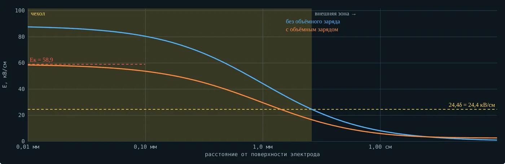
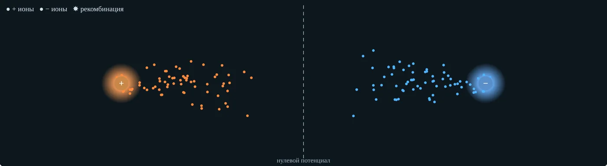
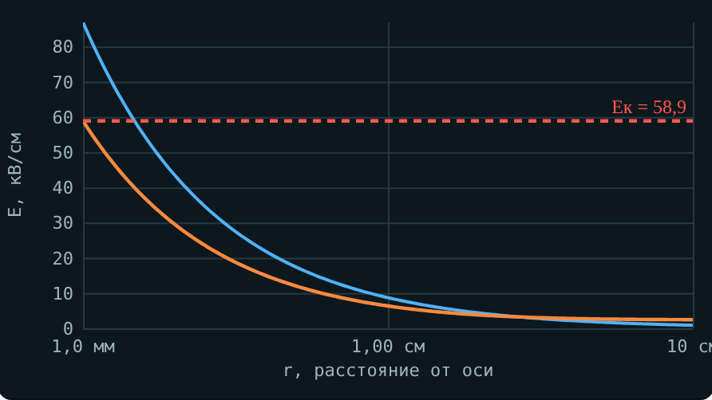
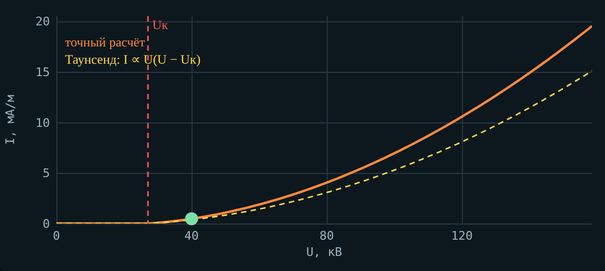
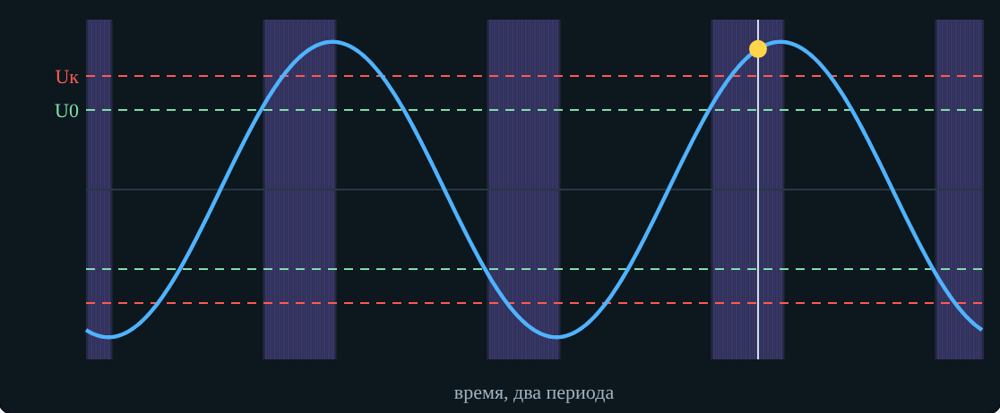
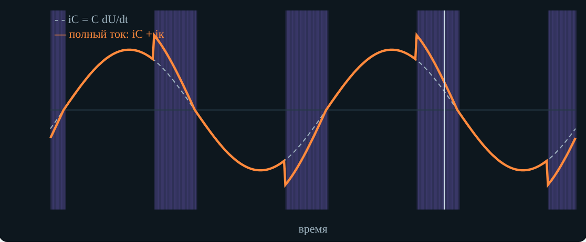
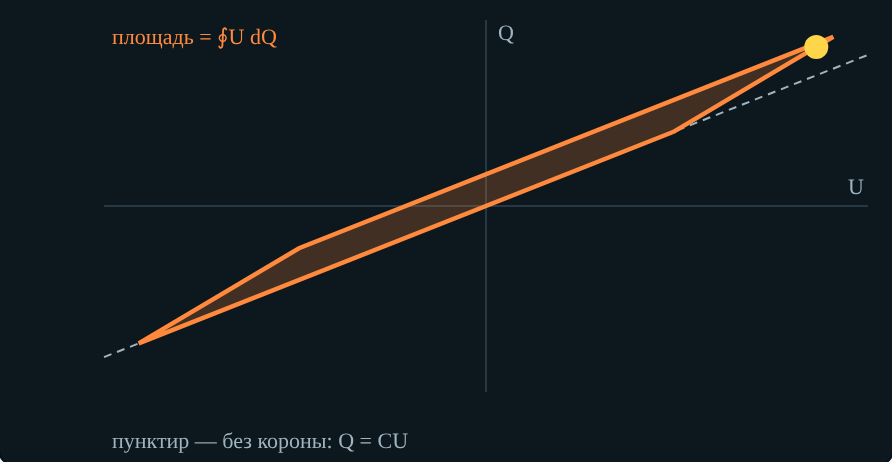
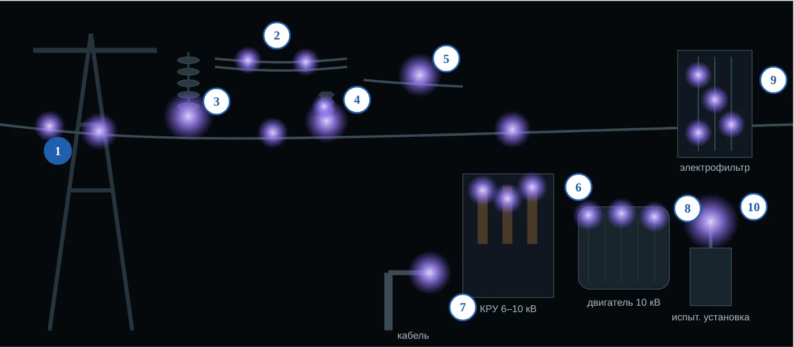

Техника высоких напряжений
Конспект темы
Тема 5. Коронный разряд
Зажигание, полярность и объёмный заряд, переменное напряжение, потери, корона на оборудовании
О чём тема. В темах 1–4 мы разобрали неоднородное поле, лавину, стример и закон Пашена. Коронный разряд собирает их вместе: это самостоятельный разряд, который горит у тонкого электрода и не перекрывает промежуток. Он стоит энергии на линиях, разрушает изоляцию в ячейках и двигателях — и он же очищает газы в электрофильтрах. Интерактив. «Коронный разряд» на сайте курса: вкладка 0 показывает, как выглядит корона; вкладки 1–5 повторяют разделы конспекта, под вкладками 1–4 — мини-опыты; 6 — реальные случаи, 7 — задачи, 8 — тест (5 вариантов). Разобранные примеры — в пособии студента. |
После изучения темы вы сможете:
объяснить, при каком условии и где зажигается корона, и рассчитать Eк по формулам Пика и Залесского;
найти напряжение зажигания для коаксиала, провода над землёй и трёхфазной линии;
отличить униполярную корону от биполярной и положительную от отрицательной;
объяснить роль объёмного заряда и вид ВАХ короны;
прочитать рис. 1.12 учебника и вольт-кулоновую характеристику;
рассчитать потери на корону по Пику и по группам погоды за год;
назвать места короны на оборудовании и меры против неё.
1. Обозначения и сокращения
| Обозначение | Смысл | Единица |
|---|---|---|
| Eк | начальная напряжённость короны (амплитуда) | кВ/см |
| Uк | напряжение зажигания (возникновения) короны | кВ |
| U0 | напряжение повторного зажигания на переменном напряжении | кВ |
| r0 | радиус провода (электрода) | см |
| R, h, S | радиус внешнего цилиндра, высота провода над землёй, расстояние между проводами или до плоскости | см |
| m, m1 | коэффициент гладкости провода | — |
| m2 | коэффициент погоды | — |
| δ | относительная плотность воздуха | — |
| Kн | коэффициент неоднородности поля Emax/Eср | — |
| μ | подвижность ионов | м²/(В·с) |
| Q | заряд провода и объёмного заряда | Кл/м |
| P | мощность потерь на корону | кВт/км |
| f | частота | Гц |
| n, Rр | число проводов в фазе и радиус расщепления | —, см |
| Сокращение | Расшифровка |
|---|---|
| ВЛ | воздушная линия электропередачи |
| ВН, СВН, УВН | высокие (до 220 кВ), сверхвысокие (330–750 кВ), ультравысокие (1150 кВ и выше) напряжения |
| ВАХ | вольт-амперная характеристика |
| КРУ | комплектное распределительное устройство |
| ПЧ | преобразователь частоты |
| ЧР | частичный разряд |
| УФ | ультрафиолетовый |
2. Что такое коронный разряд
Коронный разряд — один из видов самостоятельного разряда. Его особенность в том, что он может не завершиться пробоем промежутка: разряд горит у электрода с малым радиусом кривизны в виде светящегося ореола — «короны» (учебник Важова, разд. 1.1.11). Корона возникает в широком диапазоне давлений — от атмосферного до сотен атмосфер и выше.
Обязательное условие — значительная неоднородность поля, коэффициент неоднородности
(1)
Такое поле у проводов линий электропередачи, острий, кромок шин и болтов, у тонких выводов испытательных установок. Если Kн < 3, разряд, начавшись, сразу перекрывает промежуток — короны нет.
Связь с темой 3 (учебник, разд. 1.1.7): в резко неоднородном поле при напряжении Uк у электрода возникает самостоятельный разряд в лавинной форме — лавинная корона. При дальнейшем росте напряжения у электрода появляются стримеры, которые проходят часть промежутка и останавливаются — стримерная корона. Для пробоя напряжение нужно поднять ещё: стример перекрывает промежуток, превращается в искровой канал, при мощном источнике — в дугу. Поэтому в резко неоднородных полях пробивное напряжение всегда больше напряжения возникновения короны.
Корона на линиях электропередачи вызывает потери энергии, иногда сравнимые с джоулевыми потерями в проводах, а также радиопомехи, акустический шум, озон и оксиды азота.
2.1. Как выглядит корона и почему её так назвали
Латинское corona — венец. Если посмотреть на провод с торца или на шар под напряжением, вокруг проводника светится тонкий голубовато-фиолетовый венец, а на остриях — лучики-зубцы. Так же называют светящуюся оболочку Солнца, видимую при затмении. Название дано по виду разряда: свечение охватывает электрод кольцом, как венец.
Светится только чехол — зона ионизации толщиной в миллиметры у поверхности. Излучают в основном молекулы азота, возбуждённые электронами, в ультрафиолете примерно 300–400 нм; глаз видит лишь фиолетовый край этого спектра. Поэтому корону наблюдают ночью или через УФ-камеру (электронно-оптический дефектоскоп), а днём её выдают шипение и треск, запах озона, радиопомехи и белёсый налёт на арматуре: оксиды азота с влагой дают азотную кислоту.
| Где и при какой полярности | Как выглядит |
|---|---|
| Провод, положительная корона | Ровный голубовато-фиолетовый чехол вдоль всего провода. Свечение однородно: лавины идут к проводу со всех сторон, и ионизация распределяется по поверхности равномерно. |
| Провод, отрицательная корона | Свечение собирается в отдельные яркие точки — «чётки» вдоль провода. Точки сидят на неровностях и пылинках и могут перемещаться. Между ними провод тёмный. |
| Провод на переменном напряжении | Глаз усредняет два полупериода: ровный фон положительной короны и пятна отрицательной. На линиях видна неравномерная фиолетовая «бахрома», ярче в местах загрязнения и повреждения проволок. |
| Острие, положительная полярность | При небольшом превышении — светящаяся шапочка на кончике. Выше — кистевая (стримерная) корона: веер тонких светящихся нитей-стримеров, которые гаснут, не долетая до второго электрода. |
| Острие, отрицательная полярность | Маленькая яркая точка-звёздочка на кончике с коротким тлеющим ореолом. Она мерцает с частотой до сотен килогерц — импульсы Тричела. |
| Капля дождя на проводе | Поле вытягивает каплю в конус, на его вершине — яркая точка короны. Под дождём таких точек сотни на каждом пролёте: Uк падает, потери растут в разы. |
| Арматура без экранного кольца | Свечение на гайках, концах болтов и кромках зажимов у гирлянды изоляторов. С экранным (защитным) кольцом поле выравнивается, и точки гаснут. |
| Расщеплённая фаза | Три–четыре провода в фазе дают больший эквивалентный радиус и меньшее поле у поверхности. В хорошую погоду свечения почти нет; светятся дистанционные распорки и их болты. |
| Провод в промзоне | Сажа, рудная и угольная пыль, зола оседают на проводе бугорками. Каждая частица — местный выступ с усиленным полем: корона загорается раньше и распадается на множество точек, как у отрицательной полярности. |
3. Зажигание короны
3.1. Чехол и внешняя зона
Ионизационные процессы идут только вблизи электрода с малым радиусом кривизны — в чехле короны, где напряжённость выше критической (около 24δ…30δ кВ/см для воздуха). За счёт ударной ионизации в чехле непрерывно рождаются заряженные частицы обоих знаков. Частицы того же знака, что и коронирующий электрод, выходят из чехла во внешнюю зону и медленно дрейфуют к противоположному электроду; ионизации там нет.

Рис. 1. Напряжённость поля у провода радиусом 1 мм в коаксиале при U = 1,5Uк (интерактив, вкладка 1). Жёлтая заливка — чехол короны; голубая линия — поле без объёмного заряда, оранжевая — с объёмным зарядом
3.2. Начальная напряжённость: формулы Пика и Залесского
Начальная напряжённость общей короны на одиночном проводе с r0 < 1 см — по формуле Пика (1.31):
(2)
где m — коэффициент гладкости провода (1 для полированного круглого провода, 0,85…0,92 — для витого), δ — относительная плотность воздуха, r0 — радиус провода в сантиметрах. При r0 > 1 см — формула Залесского (1.32):
(3)
Обе формулы дают значение для постоянного напряжения и для амплитуды переменного. Почему у тонкого провода Eк больше: поле быстро спадает от поверхности, и электронной лавине не хватает пути, чтобы набрать нужное число ионизаций, — нужна большая напряжённость у самой поверхности. При больших радиусах Eк стремится к критической напряжённости воздуха.
| Провод и условия | Формула | Eк, кВ/см |
|---|---|---|
| r0 = 0,5 см, гладкий, δ = 1 | Пик | 43,1 |
| r0 = 0,5 см, m = 0,85, 750 мм рт. ст., +28 °C | Пик | 35,4 |
| r0 = 0,1 см, гладкий, δ = 1 | Пик | 58,9 |
| r0 = 2 см, гладкий, δ = 1 | Залесский | 35,9 |
Таблица 1. Начальная напряжённость короны для разных проводов и условий.
3.3. Напряжение зажигания для разных промежутков
Напряжение зажигания — напряжение, при котором напряжённость у поверхности провода достигает Eк. Для коаксиала (провод радиусом r0 в трубе радиусом R) поле E(x) = U/(x·ln(R/r0)), откуда
(4)
Для провода на высоте h над землёй (метод зеркальных изображений) под логарифмом 2h/r0; для промежутка острие — плоскость напряжённость у острия E = U/(r·ln(1 + 4S/r)) (ф. 1.27). Для трёхфазной линии с расстоянием между проводами S учебник даёт действующее значение (1.37):
(5)
где m1 — коэффициент гладкости, m2 — коэффициент погоды. Коэффициент 21,2 ≈ 30/√2 — действующее значение при Eк ≈ 30 кВ/см без поправки на радиус, поэтому формула (1.37) даёт оценку снизу.
Пример. Гладкий провод r0 = 1 см на высоте 10 м: Eк = 30,3·1,298 = 39,3 кВ/см; Uк = 39,3·ln 2000 = 299 кВ амплитуды (211 кВ действующего). Провод r0 = 1 мм в трубе R = 10 см: Eк = 58,9 кВ/см, Uк = 58,9·0,1·ln 100 = 27,1 кВ.
3.4. Погода и состояние поверхности
Плотность воздуха δ = (p/760)·293/(273 + t) входит в формулу Пика: в морозный антициклон (775 мм рт. ст., −30 °C, δ = 1,23) Uк провода из примера растёт до 359 кВ, на высоте 2000 м (δ = 0,81) падает до 249 кВ. Ещё сильнее влияют осадки: капли, иней и изморозь на проводе — это острия, местное поле у них выше среднего. Учебник: «атмосферные осадки резко снижают начальное напряжение возникновения короны». Шероховатость, заусенцы, загрязнения учитывает коэффициент m.
Загрязнение поверхности. На проводах у промышленных площадок — обогатительных фабрик, ТЭЦ, металлургических и цементных заводов — оседают сажа, зола, рудная и угольная пыль. Каждая частица — маленький выступ с усиленным местным полем, поэтому корона загорается раньше, а свечение распадается на множество точек. В расчёте это учитывают тем же коэффициентом m: mитог = m·kзагр. Учебник даёт m = 0,8…0,9 для витого провода с учётом неровностей и загрязнений; отдельный множитель загрязнения в интерактиве принят ориентировочно: 0,92 для запылённого провода и 0,85 для сильно загрязнённого в промзоне. Реальное значение определяют измерением. Дождь частично смывает отложения, но в тумане и мороси пыль даёт проводящую плёнку и капли — потери растут сильнее, чем у чистой линии.
Пример: витой провод (m = 0,9) в промзоне (kзагр = 0,85) имеет mитог = 0,765, и Uк провода r0 = 1 см на высоте 10 м снижается с 299 до 229 кВ — ниже, чем при переходе на высоту 2000 м.
4. Корона на постоянном напряжении
4.1. Униполярная и биполярная корона
Униполярная корона возникает, когда коронирующие электроды имеют одинаковую полярность. Вся внешняя зона заполнена зарядами того же знака, что и коронирующий провод (рис. 1.10 учебника).
Рис. 2. Положительная униполярная корона в коаксиале: положительные ионы уходят из чехла во внешнюю зону (интерактив, вкладка 2)
Биполярная корона возникает, когда коронирующие электроды имеют противоположную полярность, например провода «плюс» и «минус» линии постоянного тока (рис. 1.11). Во внешней зоне ионы разных знаков движутся навстречу. Если бы на границе нулевого потенциала происходила полная рекомбинация, биполярная корона состояла бы из двух независимых униполярных. В действительности рекомбинирует лишь часть ионов; проникшие ионы уменьшают объёмный заряд чужой зоны. Чтобы сохранить начальную напряжённость на поверхности провода, ионизация в чехле должна возрасти, и из него выделяется дополнительный заряд. Поэтому ток и потери биполярной короны значительно больше, чем униполярной.

Рис. 3. Биполярная корона: ионы разных знаков движутся навстречу, на линии нулевого потенциала рекомбинирует только часть (интерактив, вкладка 2)
4.2. Полярность
При положительном острие вторичные лавины поддерживаются фотоионизацией в объёме газа, при отрицательном — фотоэффектом с катода (разд. 1.1.7). В отрицательной короне электроны, выйдя из чехла, быстро прилипают к молекулам кислорода — во внешней зоне дрейфуют отрицательные ионы. На острие отрицательная корона горит регулярными импульсами (импульсами Тричела): облако отрицательных ионов периодически ослабляет поле у острия, и частота импульсов растёт с напряжением. На проводе отрицательная корона видна отдельными светящимися точками, положительная — ровной оболочкой.
Эффект полярности. Пробой промежутка острие — плоскость при положительном острие происходит при напряжении в 2…2,5 раза меньшем, чем при отрицательном: положительный объёмный заряд как бы удлиняет острие, отрицательный — экранирует его. Отрицательная корона устойчива в широком диапазоне напряжений — на этом основаны электрофильтры: коронирующие электроды под отрицательным напряжением заряжают частицы пыли, и поле осаждает их на пластинах.
4.3. Объёмный заряд и что происходит с током
Объёмный заряд одного знака с проводом ослабляет поле у его поверхности и усиливает у противоположного электрода. После зажигания напряжённость у провода остаётся близкой к Eк: «лишнее» напряжение расходуется не на ионизацию, а на дрейф ионов. Это самоограничение короны (учебник, разд. 1.1.11: «несмотря на повышение U до Uмакс, напряжённость на проводе остаётся постоянной и равной Eк из-за влияния объёмного заряда»).

Рис. 4. Поле в коаксиале: голубая линия — без объёмного заряда, оранжевая — с ним; красный пунктир — Eк (интерактив, вкладка 2)
Ток короны до Uк практически равен нулю, после — растёт плавно, примерно как U(U − Uк). Для коаксиала это формула Таунсенда (в учебнике Важова её нет, это дополнение из классической теории короны):
(6)
ток на метр длины, μ — подвижность ионов (порядка 1,5·10⁻⁴ м²/(В·с) для положительных и 2·10⁻⁴ — для отрицательных ионов воздуха). Формула точна вблизи Uк; при больших напряжениях точнее решать уравнение Пуассона с условием E(r0) = Eк — так считает интерактив.

Рис. 5. ВАХ короны в коаксиале r0 = 1 мм, R = 10 см: точный расчёт (сплошная) и формула Таунсенда (пунктир)
Пример. r0 = 1 мм, R = 10 см, Uк = 27,1 кВ, U = 40 кВ, μ = 2·10⁻⁴ м²/(В·с): I = 2,225·10⁻¹⁰·2·10⁻⁴·40 000·12 900/(0,01·4,605) = 0,50 мА/м; мощность P = UI = 20 Вт/м.
5. Корона на переменном напряжении
5.1. Процесс за период (рис. 1.12)
Корона зажигается в момент t1, когда напряжение достигает Uк. Вокруг провода образуется чехол, положительные заряды выносятся в пространство и образуют внешний объёмный заряд. Коронирование продолжается, пока напряжение растёт до Uмакс (t2); напряжённость на проводе при этом остаётся равной Eк. Затем напряжение снижается, напряжённость падает — корона гаснет, но положительный объёмный заряд остаётся и удаляется от провода на 40…100 см. Разность потенциалов между проводом и объёмным зарядом растёт, и в момент t4 при напряжении U0, значительно меньшем Uк, зажигается отрицательная корона. Отрицательные частицы движутся от провода, положительные из объёмного заряда — навстречу; к t5 положительный заряд скомпенсирован, к t6 накоплен отрицательный, и корона гаснет. Дальше циклы повторяются, и зажигание в обеих полярностях идёт при U0.

Рис. 6. Напряжение на проводе за два периода: фиолетовые полосы — горение короны, красный пунктир — Uк, зелёный — U0 (интерактив, вкладка 3)
В упрощённой модели с постоянной напряжённостью у горящего провода объёмный заряд прошлого полупериода создаёт у провода добавку, равную Uмакс − Uк, и
(7)
5.2. Токи
Между проводом и землёй есть ёмкость C, по ней течёт ёмкостный ток (1.33):
(8)
Ток короны iк накладывается на ёмкостный и искажает синусоиду; длительность пиков тока короны равна длительности её горения (t1–t2, t4–t5, t6–t7). На переменном напряжении коронирование интенсивнее, чем на постоянном: каждые полпериода объёмный заряд перезаряжается, и потери существенно больше.

Рис. 7. Ёмкостный ток (пунктир) и полный ток с пиками тока короны (интерактив, вкладка 3)
5.3. Вольт-кулоновая характеристика
Потери на корону экспериментально находят, осциллографируя вольт-кулоновую характеристику Q(U). Энергия потерь за период — её площадь (1.34), мощность (1.35):
(9)
Без короны Q = CU — прямая, площадь равна нулю. С короной Q(U) обходит параллелограмм с вершинами в точках зажигания (U0) и максимума (Uмакс) каждой полярности. При росте амплитуды площадь растёт и по ширине, и по высоте.

Рис. 8. Вольт-кулоновая характеристика провода при Uмакс = 1,3Uк; пунктир — Q = CU без короны (интерактив, вкладка 3)
Пример. Площадь вольт-кулоновой характеристики 0,24 Дж на метр за период, f = 50 Гц: P = 50·0,24 = 12 Вт/м = 12 кВт/км.
6. Потери на корону
6.1. Формула Пика
Для одиночных проводов на переменном напряжении пользуются эмпирической формулой Пика (1.36):
(10)
где Uф и Uк — действующие значения, кВ; r0 и S — в сантиметрах; Uк — по (1.37). Важно: в учебнике Важова коэффициент напечатан как 24,1. У Пика он равен 241: с 24,1 потери получаются в десять раз меньше, чем по исходной формуле Пика (Peek; Naidu, Kamaraju).
Пример (ВЛ 220 кВ, дождь). АС-300, r0 = 1,2 см, S = 7 м, m1 = 0,9, m2 = 0,8, δ = 1, Uф = 127 кВ. Uк = 21,2·1,2·ln 583·0,9·0,8 = 116,7 кВ < 127 кВ — корона горит; P = 241·75·√(1,2/700)·(127 − 116,7)²·10⁻⁵ = 0,80 кВт/(км·фаза), на линию — 2,4 кВт/км. В хорошую погоду (m2 = 1) Uк = 145,8 кВ > 127 кВ — короны нет.
6.2. Погода за год
Для оценки среднегодовых потерь погоду делят на четыре группы: хорошая погода; дождь (мокрый снег, морось); сухой снег; изморозь (гололёд, иней). Наибольшие потери в единицу времени — при изморози. Годовые потери — сумма по группам с учётом их продолжительности (1.41):
(11)
| Группа погоды | Часов в году | Доля, % |
|---|---|---|
| Хорошая погода | 7120 | 81,3 |
| Сухой снег | 800 | 9,1 |
| Дождь | 500 | 5,7 |
| Изморозь | 340 | 3,9 |
Таблица 2. Продолжительность групп погоды для средней полосы европейской части России и Западной Сибири (табл. 1.3 учебника). Для Кольского полуострова изморози и гололёда больше; продолжительности стоит взять по данным местной метеостанции.
Пример. Мощность потерь: хорошая погода 0,05 кВт/км, сухой снег 0,4, дождь 1,2, изморозь 3,0. Энергия за год: 0,05·7120 + 0,4·800 + 1,2·500 + 3,0·340 = 356 + 320 + 600 + 1020 = 2296 кВт·ч/км. Изморозь — 3,9 % времени, но 44 % потерь.
")
Рис. 9. Мощность и энергия потерь по группам погоды для ВЛ 220 кВ (интерактив, вкладка 4; коэффициенты погоды m2 приняты 1,0 / 0,9 / 0,8 / 0,7 — учебник их не приводит)
Загрязнение провода снижает m1 и действует во всех группах погоды сразу. Во вкладке 4 для ВЛ 220 кВ (АС-300, m1 = 0,9, 1,05Uном) годовые потери чистой линии — 10,7 МВт·ч/км, а в промзоне (kзагр = 0,85) — 52,5 МВт·ч/км, в 4,9 раза больше. Коэффициент загрязнения здесь ориентировочный, но порядок эффекта показателен: корона появляется уже в хорошую погоду.
6.3. Расщеплённые провода
На линиях 330 кВ и выше фазу расщепляют на 2–4 провода (рис. 1.13). Расщеплённая фаза работает как провод большого эквивалентного радиуса rэ = (n·r0·Rрn−1)1/n: напряжённость у поверхности падает, Uк растёт. Для расщеплённых проводов учебник приводит формулу Майра (1.38) и формулу Л. Егоровой и Н. Тиходеева (1.40):
(12)
где Um — амплитуда фазного напряжения, кВ. Пример. Um = 408 кВ, Uк = 480 кВ: P = 2,4·10⁻⁶·408²·e8,7·0,32 = 0,400·16,2 = 6,5 кВт/км. Эмпирическая формула учитывает местную корону на неоднородностях, поэтому даёт потери и при Um < Uк. Классы напряжения: ВН — 1…220 кВ, СВН — 330…750 кВ, УВН — 1150 кВ и выше.
7. Корона на линиях и оборудовании
Везде действует одно правило: корона возникает там, где мал радиус электрода, и устраняется увеличением радиуса и выравниванием поля.
| Где | Чем грозит | Мера |
|---|---|---|
| Провод ЛЭП | потери, радиопомехи, шум, озон | больше сечение, расщепление фазы |
| Гирлянда изоляторов | корона на зажиме, эрозия, помехи | экранные кольца и овалы (защитная арматура) |
| Полимерный изолятор | эрозия оболочки, потеря гидрофобности, трекинг | защитные кольца по указанию изготовителя |
| Порванная проволока провода | местная корона, признак повреждения | ремонтный бандаж; осмотр УФ-камерой |
| Шины и болты КРУ 6–10 кВ | озон и оксиды азота, с влагой — азотная кислота, трекинг | скругление кромок, колпачки, покрытия, подогрев |
| Концевая муфта кабеля | корона и ЧР у края экрана, пробой | регулятор поля: конус, трубка с высокой ε |
| Лобовые части двигателя 6–10 кВ | белый налёт, разрушение лака, затем пазовые разряды | противокоронное покрытие, фильтр dU/dt на выходе ПЧ |
| Испытательная установка | ложные сигналы ЧР | экранные тороиды, трубы большого диаметра |
| Электрофильтр | корона полезна — очистка газов | отрицательная полярность |
Корону ищут УФ-камерой (дефектоскопом): разряд излучает в ультрафиолете, и камера выделяет его на дневном фоне. Кроме того, корону выдают треск и ультразвук, радиопомехи и запах озона.

Рис. 10. Снимок «УФ-камеры» до мер: свечение на проводе, арматуре, шинах КРУ, муфте, лобовых частях двигателя и выводе испытательной установки (интерактив, вкладка 5)
8. Мини-опыты в интерактиве
Под вкладками 1–4 интерактива — мини-опыты. Студент меняет напряжение и условия, записывает показания в тетрадь, считает отношения, проверяет себя кнопкой «Проверить» и обсуждает выводы в группе. Ответы принимаются с допуском 3 %.
8.1. Когда загорается корона (вкладка 1)
Электроды «Провод над землёй», r0 = 1 см, h = 10 м, гладкий чистый провод, нормальные условия. Нажмите «Плавно поднять» и заметьте, при каком U появляется фиолетовый чехол. Запишите Uк.
Не меняя остального, выберите «0,9 — витой» и загрязнение «промзона». Запишите Uк.
Верните гладкий чистый провод и выберите погоду «Апатиты, мороз −30 °C». Запишите Uк.
Найдите отношения к первому опыту.
Обсудите в группе:
Почему отношение для витого провода в промзоне в точности равно произведению коэффициентов, а для мороза оно меньше δ = 1,23? Посмотрите, где δ стоит в формуле Пика.
Что опаснее для линии у обогатительной фабрики: мороз или пыль на проводе? Что будет при изморози в той же промзоне?
8.2. Полярность и ток короны (вкладка 2)
Коаксиал R = 10 см, радиус провода r0 = 1,0 мм. Запишите Uк.
Режим «Униполярная, провод +», U = 40 кВ: запишите ток I+. Переключите на «провод −» и запишите I−.
Верните «провод +», поднимите U до 53 кВ — превышение U − Uк стало примерно вдвое больше. Запишите ток.
Найдите отношения и сравните второе с оценкой Таунсенда U(U − Uк).
Обсудите в группе:
Отношение I−/I+ оказалось равно отношению подвижностей. Почему ток короны во внешней зоне задают ионы, а не электроны?
Почему при вдвое большем превышении ток вырос больше чем вдвое? Какой множитель в формуле Таунсенда за это отвечает?
Где на практике выгодна отрицательная корона, а где мешает? Вспомните электрофильтры и вкладку «Оборудование».
8.3. Площадь вольт-кулоновой характеристики (вкладка 3)
Оставьте «рост ёмкости» 1,5. Поставьте Uмакс/Uк = 1,2 и запишите U0 и потери P.
Повторите для 1,5 и 1,8.
Найдите, во сколько раз выросли потери при переходе от 1,2 к 1,8. Сравните с отношением превышений (1,8 − 1)/(1,2 − 1) и их квадратов (1,8 − 1)²/(1,2 − 1)² — так считала бы формула Пика.
Поставьте 1,5 и измените «рост ёмкости» на 2,5. Запишите P.
Обсудите в группе:
Почему U0 меньше Uк и уменьшается с ростом амплитуды? Что остаётся в пространстве после предыдущего полупериода?
В модели параллелограмма потери растут пропорционально превышению Uмакс − Uк, а по формуле Пика — как его квадрат. Какое допущение модели (постоянный «рост ёмкости») это объясняет? Что сильнее влияет на площадь — амплитуда или рост ёмкости?
Как по осциллограмме тока линии (б) понять, что корона горит, не глядя на напряжение?
8.4. Сколько энергии съедает корона за год (вкладка 4)
ВЛ 220 кВ, один провод в фазе, рабочее напряжение 1,05Uном, m1 = 0,9, чистый провод, нормальные условия, часы погоды по табл. 1.3. Запишите годовые потери и долю изморози.
Север: впишите в таблицу 700 ч изморози и 6760 ч хорошей погоды (остальное не меняйте). Запишите годовые потери.
Верните часы 340 и 7120 и выберите загрязнение «промзона». Запишите годовые потери.
Найдите отношения к первому опыту.
Обсудите в группе:
Изморозь бывает меньше 4 % времени. Почему её доля в потерях так велика? Посмотрите на столбец Uф/Uк.
Что выгоднее для линии у горно-обогатительного комбината: провод большего сечения или расщеплённая фаза? Проверьте оба варианта во вкладке.
Как бы вы оценили коэффициент загрязнения для реальной линии? Какие измерения нужны?
9. Реальные случаи
Шесть типовых ситуаций с линий, подстанций и фабрик. Они же — во вкладке 6 интерактива с вопросами.
9.1. Линия гудит только в туман
Жители посёлка у ВЛ 220 кВ жалуются: в ясную погоду линию не слышно, а в туман, морось и при изморози она трещит и гудит, на телевизорах помехи. Провод — АС-300, расстояние между фазами около 7 м, рабочее напряжение не менялось.
Вопрос. Почему корона появляется только в плохую погоду?
9.2. Белый налёт в лобовых частях
При ремонте двигателя 6 кВ насоса, который два года работал от преобразователя частоты, на выходе стержней из паза нашли белый порошок, лак обесцвечен и потрескался. Сопротивление изоляции в норме.
Вопрос. Что здесь произошло?
9.3. Кольцо на полимерном изоляторе
На новой ВЛ 220 кВ полимерные подвесные изоляторы смонтировали без защитных колец у провода. Через два года при осмотре оболочки у металлического оконцевателя побелели, появились мелкие кратеры, гидрофобность потеряна.
Вопрос. Какая причина наиболее вероятна?
9.4. Ложные частичные разряды
При приёмке кабеля 10 кВ измерение частичных разрядов показало 300 пКл. Сигнал не исчез, когда кабель отключили и подали напряжение только на соединительный провод. После установки экранных тороидов на вывод трансформатора и замены провода трубой фон упал до 5 пКл.
Вопрос. Что давало сигнал?
9.5. Кто «съедает» энергию за год
Для ВЛ 220 кВ посчитали мощность потерь на корону: хорошая погода 0,05 кВт/км, сухой снег 0,4, дождь 1,2, изморозь 3,0 кВт/км. Продолжительность групп — по табл. 1.3 учебника: 7120, 800, 500 и 340 часов.
Вопрос. Какая группа погоды даёт наибольшую часть годовых потерь?
9.6. Полярность электрофильтра
На электрофильтре сушильного отделения обогатительной фабрики после ремонта источника питания полярность коронирующих электродов случайно сменили на положительную. Пробои между электродами участились, пришлось снизить напряжение, степень очистки газа упала.
Вопрос. Почему электрофильтры работают на отрицательной полярности?
10. Главное
Корона — самостоятельный разряд у электрода малого радиуса; условие — Kн ≥ 3. Ионизация идёт только в чехле, во внешней зоне — дрейф ионов.
Eк считают по Пику (r0 < 1 см) или Залесскому; у тонкого провода Eк больше, но Uк меньше.
Плотность воздуха, шероховатость и особенно осадки снижают Uк.
Объёмный заряд держит напряжённость у провода на Eк; ток растёт примерно как U(U − Uк).
Биполярная корона даёт больший ток, чем униполярная; отрицательная корона устойчивее положительной.
На переменном напряжении корона горит от зажигания до максимума в каждом полупериоде, повторное зажигание — при U0 < Uк; площадь Q(U) — энергия потерь за период.
Потери по Пику растут как (Uф − Uк)²; годовые потери считают по группам погоды, изморозь даёт непропорционально большую долю.
Против короны — увеличить радиус и выровнять поле: расщепление, экранные кольца, скругление, полупроводящие покрытия, регуляторы поля.
11. Вопросы для самопроверки
Почему корона невозможна в слабо неоднородном поле?
Что такое чехол короны и внешняя зона?
От чего зависит Eк по формуле Пика? Когда применяют формулу Залесского?
Почему у тонкого провода Eк больше, а Uк меньше?
Чем униполярная корона отличается от биполярной? Почему у биполярной больше ток?
Что такое импульсы Тричела? Почему электрофильтры работают на отрицательной полярности?
Что происходит с напряжённостью у провода после зажигания короны?
Опишите процесс за период по рис. 1.12. Почему U0 < Uк?
Что означает площадь вольт-кулоновой характеристики?
Почему годовые потери считают по группам погоды?
Зачем фазы ВЛ 330 кВ и выше расщепляют?
Как защищают от короны лобовые части двигателя, концевую муфту, вывод испытательной установки?
12. Источники
Важов В. Ф., Лавринович В. А. Техника высоких напряжений: учебник. — Томск: ТПУ, 2014. — Разд. 1.1.7, 1.1.11, 1.1.14.
Peek F. W. Dielectric Phenomena in High-Voltage Engineering. — McGraw-Hill, 1929 (формулы Eк и потерь на корону).
Kuffel E., Zaengl W. S., Kuffel J. High Voltage Engineering: Fundamentals. — Newnes, 2000 (корона, ВАХ, импульсы Тричела).
Naidu M. S., Kamaraju V. High Voltage Engineering. — McGraw-Hill (потери на корону, формула Пика).
Райзер Ю. П. Физика газового разряда. — М.: Наука (коронный разряд, ВАХ Таунсенда).